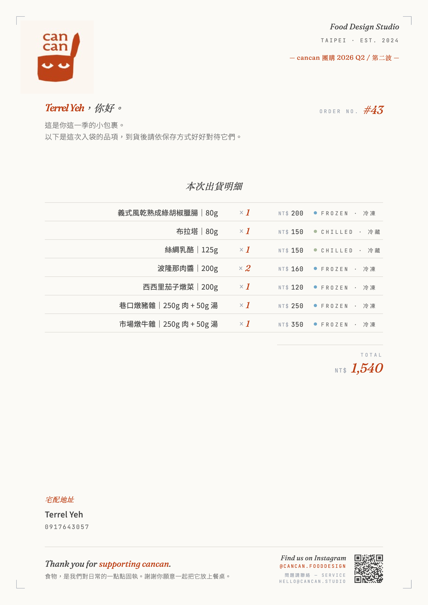

cancan 團購 ·
從 Google Form 到設計版出貨單
cancan 食物設計工作室每季團購的訂單整理痛苦，用 AI 一起做出全自動 Google Sheet + 品牌設計版宅配 PDF 出貨單。零月費、無付費 API。

為什麼要做這件事
cancan 一直用 Google Form 收團購訂單。Form 結束、回應自動進 Google Sheet — 然後就卡住了。Sheet 上的原始資料完全不是「可用的」狀態，後面全是手動工作。
打開「表單回應」分頁，你看到的是：
- 每個品項佔一欄（A B C D...AJ 一路排到 36 欄），每格是「客人勾的數量」
- 多選方格在 sheet 裡長這樣：「2, 3」← 客人勾了 2 跟 3，意思是要買 5 份
- 沒有金額、沒有小計、沒有警示
- 沒有任何「客人應付多少錢」的計算
- 沒有任何「某個品項總共賣了多少」的彙總
要產出可用資訊，每檔次團購（30-50 筆訂單）我們要手動做這些事：
| 痛點 | 具體要做的事 | 出錯機率 |
|---|---|---|
| 加總每個品項買賣量 | 36 欄逐欄 SUM，給廠商叫貨用 | 中 — 漏一格就少叫 |
| 算每筆訂單金額 | 每筆訂單橫向逐欄 × 單價、加總 | 高 — 心算容易錯 |
| 套折扣規則 | 「乾熟老朋友滿 6 項折 $100」要手動算 | 高 — 容易忘記套 |
| 監控上限 | 酸種麵包 150 顆、紅隼 12 瓶 — 不知道哪筆讓總量超過 | 高 — 通常事後才發現超賣 |
| 對帳追後五碼 | 客人 LINE 私訊後五碼，要 cross-check Sheet | 中 — 容易漏一兩個 |
| 異常檢查 | 地址欄漏填？電話格式怪？選「其他」取貨？ | 高 — 出貨後才發現 |
| 通路分析 | 4 個通路各自帶多少單？平均單價？ | — 通常不做，因為太麻煩 |
| 宅配出貨單 | 每筆宅配要從 Sheet 抓 → 填到範本 → 印出夾進包裹 | 高 — 地址抄錯、品項漏 |
整個下午（約 4 小時）就在做這些「機械工」。最痛的是宅配出貨單 — 同仁的時間花在抄資料、不是花在 cancan 真正擅長的事情上。
技術選型
| 工具 / 技術 | 選的理由 |
|---|---|
| Google Apps Script | 跟現有 Google Form / Sheet 完全整合、免費、無伺服器、沒有額外帳號要管 |
| Apps Script Web App | 想做出貨單 PDF，這是唯一能不付 PDF 轉換服務（PDFShift 月費 $9）下做到設計版輸出的路徑 |
| HTML + 內嵌 CSS | 設計版出貨單的「設計力」靠這個。用瀏覽器原生列印（Cmd+P）轉 PDF 品質完美 |
| Claude Design | 出貨單視覺由 claude.ai 的 artifact 模式產出（Fraunces serif + Noto Sans TC + 品牌橘 #BD4218），再請 AI 套上 placeholder 變模板 |
| html2canvas | 「存為圖片」按鈕用這個 CDN lib，把整張 sheet 轉 PNG（方便貼 IG / LINE） |
外部服務與金鑰
整套零月費、零信用卡。唯一要管的 secret 是 Telegram Bot Token，但它存在 Apps Script 的 Script Properties，不會出現在 Code.gs：
系統架構
整套系統其實就一份 Google Sheet。前端是 Form，後端是 Apps Script（包含 Web App），資料庫就是 Sheet 自己。
客人下單的同時，通知系統雙管道分流，避免重要訊息淹沒在每天的訂單裡：
💡 雙管道分工原則 — Telegram = 即時行動、Email = 警示備案。兩種頻率混在同一個 channel 就會被忽略。
Code.gs 做了什麼 — 4 小時變 0 的核心引擎
整個系統的大腦是一份 ~2000 行的 Google Apps Script（Code.gs）。它做的事可以分四層：
每次 form 提交（或手動觸發），核心函式 computeAllOrders_() 會做這些事：
- 動態找到標題列：不假設 row 1 就是標題。腳本用
findHeaderRow_()掃前 20 列，找到含「題目 [選項 $價格]」格式的那列才認定 — 因為同仁可能在表單回應分頁上方加手動統計列 - 解析 36 欄品項資料：每欄抓出「題組標題 / 選項 / 單價」三個資訊
- 多選方格加總：客人勾「2, 3」→ 自動算成 5 份
- 算每筆訂單小計 / 折扣 / 總額：橫向加總、套規則折扣、得到應付金額
- 追蹤上限累計：按時間順序累加酸種、紅隼數量，超過 150 顆 / 12 瓶就標記哪一筆「跨界」
- 欄位標準化：電話補回前導 0、取貨方式拿掉括號內贅字、通路名稱合併同類項
- 異常檢查：地址空、電話格式怪、選「其他」、跨界超量 — 全部標紅
解析完成的訂單資料同時被寫入 6 個分頁，每一頁都不是純資料列表，而是針對一個營運場景設計的視圖：
※ 以下示意圖均為結構示範，所有客戶名稱、電話、地址、後五碼皆為虛構資料；版面與顏色邏輯與實際 sheet 一致。
| # | 客戶 | 電話 | 取貨 | 地址 | 後五碼 | 總額 | 狀態 | 📄 出貨單 |
|---|---|---|---|---|---|---|---|---|
| 001 | 客戶 A | 0912-***-*** | 宅配 | 台北市… | 12345 | $2,840 | 正常 | 📄 開啟 |
| 002 | 客戶 B | 0987-***-*** | 自取 | — | — | $1,560 | 待對帳 | ⏳ 待收款 |
| 003 | 客戶 C | 09xxx-? | 其他 | （缺） | — | $3,200 | 異常 | ⏳ 待收款 |
| 品項 | 累計 | 自取 | 宅配 | 其他 | 備註 |
|---|---|---|---|---|---|
| 酸種麵包 | 116 | 42 | 74 | 0 | 上限 150 |
| 乾熟老朋友・原味 | 28 | 11 | 17 | 0 | 折扣品 |
| 紅隼三號白酒 | 3 | 1 | 2 | 0 | 上限 12 |
| ESKE 咖啡掛耳・淺焙 | 54 | 22 | 32 | 0 | 滿件免運 |
| 客戶 | 金額 | 後五碼 | 狀態 | 備註 |
|---|---|---|---|---|
| ⏳ 待對帳 ・ 34 筆 ・ $78,210 | ||||
| 客戶 B | $1,560 | — | 待對帳 | — |
| 客戶 D | $3,420 | — | 待對帳 | 已寄信 |
| ✓ 已對帳 ・ 19 筆 ・ $42,830 | ||||
| 客戶 A | $2,840 | 12345 | 已對帳 | — |
| 客戶 E | $2,180 | 67890 | 已對帳 | 少送一份 |
| 客戶 | 異常類型 | 原始值 | 建議動作 |
|---|---|---|---|
| 客戶 C | 地址空白 | （缺） | LINE 客戶補地址 |
| 客戶 F | 電話格式 | 09xxx-? | 確認電話正確 |
| 客戶 G | 取貨方式：其他 | 「面交」 | 跟客人確認取貨方式 |
| 客戶 H | 超量 | 酸種 +3 顆跨界 | 告知 + 改訂或退費 |
onFormSubmit（installable trigger）：客人按下 form 送出 → 6 個分頁全部 rebuild + 該寄通知就寄 email。同仁不需要按任何按鈕onEdit（simple trigger，雙分頁監聽）：- 同仁在「表單回應分頁」的「後五碼」欄打字 → 訂單明細 / 匯款對帳 / 儀表板 2 秒內全部同步
- 訂單明細的「收款備註」欄打字 → 同步匯款對帳 + 儀表板
doGet(e)（Web App entry point）：訂單明細的「📄 開啟」連結點下去 → 即時渲染該筆訂單的設計版出貨單
不只自動化，還做了幾個對「多人共用」很重要的事：
- 分頁保護（Warning Only）：每個自動產生的分頁加上「修改前跳警告」保護，避免同事不小心改到那些會被下次 rebuild 覆蓋的 cell。但不是強鎖 — 真的要改還是可以
- 訂單明細只開放 4 個可編輯欄位：電話 / 取貨方式 / 地址 / 收款備註。標頭用深棕色標示，視覺上分得清楚。這 4 欄的修改會跨 rebuild 保留（用時間戳當 kept 字典的 key — 因為連電話本身都可能被改）
- 後五碼的 source of truth 在表單回應分頁：同仁在那邊填，訂單明細的後五碼欄變唯讀（自動同步），避免兩邊填造成不一致。col 17 的「📄 開啟」用 IF 公式判斷「有後五碼才能點」— 防止對未匯款客人出貨
- email 通知支援多收件人：CONFIG 設
NOTIFY_EMAILS: ['a@x.com', 'b@x.com']即可 - 新團購只動 CONFIG：受限品項、折扣規則、通知收件人、檔次標籤都在 Code.gs 最上方 CONFIG 區塊。新檔次團購不需要動到任何業務邏輯，10 分鐘就能設定好
把所有「會變的東西」抽到 CONFIG、所有「規則式判斷」抽到 helper 函式（matchesLimit_ / matchesCured_ / detectStorageType_ / normalizeChannel_ ...）— 整套腳本變成「像 OS 一樣穩定的核心 + 像 plugin 一樣可換的規則」。這個觀念是這次 AI 協作最大的收穫。
email 跑完一檔之後發現問題：email 還是要打開信箱才看得到。客人下單到我看到平均 30 分鐘到 2 小時。手機通知比 email push 即時太多。所以後來補上 Telegram bot，但設計策略是兩個管道分工、不是疊一份。
| 管道 | 觸發條件 | 設計意圖 |
|---|---|---|
| Telegram bot（群組） | 每筆訂單都推 | 即時 / 手機 / 同事一起看 / 可以在訊息底下直接 @ 討論誰回客 |
| 只推異常 ／ 超量 ／ 快滿 | 不被洗版；遇到真的要動的事才打開 |
為什麼選 Telegram 不選 LINE：
- LINE Notify 2025-03-31 停服了，舊教學全部不能用
- LINE Messaging API 每月免費 200 通，但要建 Provider + Channel + Bot，步驟多 3-4 步，「收件人數 × 訊息數」算法搞不好就超出免費額度
- Telegram 跟 BotFather 對話一句
/newbot就建好 bot；完全免費無上限
用群組通知，不是個人私訊。同事不用每個人都跟 bot 申請、不用蒐集每個人的 chat_id；把 bot 拉進工作群組就好。要加人 / 踢人直接在群組操作，完全不用改 code。
Bot Token 一條重要原則：絕對不寫進 Code.gs，存在 Apps Script 的 Script Properties。任何有 Sheet 編輯權的人都看得到 source code，token 寫死等於外洩。透過選單對話框輸入一次，存進 PropertiesService.getScriptProperties()，code 裡只看得到 helper 函式去讀它。
推進方式（怎麼跟 AI 一起做）
整個系統是 5-6 個 session 逐步堆疊起來的，不是一次到位。每個 session 解一塊痛點，新東西先 PoC、確認 OK 再加進主腳本。
第一句我給 AI 是：「我有一份 Google Form，回應放在 Google Sheet，可以幫我做 Apps Script 自動整理嗎？」
AI 第一輪沒急著寫 code，反而問了好幾個關鍵問題：有沒有折扣規則？怎麼套？上限品項是哪些？怎麼算？這把我逼著想清楚規則本身。CONFIG 區塊就是這次對話的產物。
第一次跑時「酸種麵包」這個品項抓不到。一查發現 Google Form 上的「題組標題」跟「sheet 上看到的欄位名稱」不一定一樣。AI 想出的解法：容錯式比對 — 比對題目關鍵字、選項關鍵字、實際資料內容三層 fallback，總有一層會中。
加了 onFormSubmit 觸發 email 通知。只在「異常 / 超量 / 接近上限」才寄，避免每筆訂單轟炸。順手也接了 onEdit — 同仁在表單回應的後五碼欄打字後 2 秒，訂單明細的對帳狀態就自動更新。
本來用 Apps Script 內建的 DocumentApp 產 Google Doc，但醜。標題就是黑字白底、品項一條一條列出來、看起來像收據。客人收到包裹打開看到這張紙的瞬間，cancan 的品牌感歸零。
跟 AI 開了一個獨立的設計討論，得到結論：Google Doc 的設計天花板就到這了，要做精品品牌的方法只有兩條：
- 付費 PDFShift 服務（$9/月）轉 HTML → PDF
- 自架 Apps Script Web App，用瀏覽器原生列印（零月費）
選了第 2 條。在 claude.ai artifact mode 設計一份 HTML 出貨單 → 抽 placeholder 做模板 → Apps Script doGet(e) 讀訂單資料填模板 → 訂單明細放 HYPERLINK 公式指向 Web App URL → 點開就是設計版頁面、Cmd+P 存 PDF。
- 訂單明細的「📄 出貨單」欄改成 IF 公式：沒後五碼顯示「⏳ 待收款」（不能點）— 避免誤對未匯款客人出貨
- 模板加「📄 存為 PDF」+「🖼️ 存為圖片」浮動按鈕
- 動態 setTitle 讓 PDF 預設檔名是「客戶名_出貨單_#03」
@page :first處理跨頁列印（第一頁 full bleed、第二頁開頭加 margin）- 品名 nowrap + tag 欄位拉寬，防斷行
跑完第一檔之後，發現 email 通知雖然有用、但要打開信箱查才看得到。客人下單到我看到平均 30 分鐘到 2 小時。問 AI 「LINE 跟 Telegram 哪個適合」，得到結論：Telegram 完勝（LINE Notify 停服 + Messaging API 設定步驟多 + 計算方式坑）。
- 新增 Telegram bot helper 函式（token 存 Script Properties、HTML 訊息格式 + escape 防破版、多 chat 同時推、HTTP 失敗不影響 email）
- 接到
onFormSubmit：客人按下送出 → 6 個分頁重整 + 推 Telegram + 該寄 email 就寄 - 設計雙管道分工：Telegram = 每筆都推、Email = 只推異常
- 加選單一條龍：設定 Bot Token → 抓 chat_id → 發測試訊息
- 推到群組而不是個人私訊 — 同事一起收到 + 訊息底下可即時討論
整段加了 ~300 行，但邏輯封裝在獨立 helper 函式裡，沒動到原本核心引擎跟 6 個分頁邏輯。
踩到的坑，讓我更懂的事
根本原因：「新增部署作業」每次都建新 URL；舊的 URL 失效後就壞。我以為「重新部署」就好。
根本原因：有多個 deployment 時，ScriptApp.getService().getUrl() 會回傳哪一個是不確定的（可能是已封存的舊版）。
document.title = '葉丁綸_出貨單_#03'，但 Cmd+P 列印對話框還是顯示「cancan 出貨單」。根本原因：Apps Script Web App 把 HTML 包在 googleusercontent.com 的 iframe 裡。瀏覽器列印用的是外框 title，不是 iframe 內 document.title。
setTitle() 設外框 title。margin-top: auto 把地址區塊推到 sheet 底部，造成第二頁中間一片空白。根本原因：列印 CSS 跟螢幕 CSS 是兩套規則。margin-top: auto 在 sheet 跨頁時會把 footer 推到很奇怪的位置。
page-break-inside: avoid；列印用 @page :first 區分第一頁跟後續頁。根本原因：裝飾性 emoji 用在已經有其他視覺暗示的位置上 = 視覺噪音。
根本原因：Telegram bot 預設開啟 Privacy Mode — 加進群組後只看得到「明確 @ 它」的訊息（Telegram 為了隱私的設計）。一般聊天 bot 根本看不見，所以 getUpdates 抓不到任何資料。
解法（任選一）：
- 在群組裡傳
@your_bot_username hi（明確 @ 它，bot 才收得到那一次） - 去 BotFather 跑
/setprivacy→ Disable（一勞永逸，但 bot 之後看得到群組所有訊息）
最終樣貌
同仁的日常流程：
- 客人填 Form → 後台自動建好訂單、計算金額、套折扣、檢查上限
- 客人匯款 → 同仁在「表單回應分頁」的「後五碼」欄填 5 位數 → 2 秒內訂單明細 / 匯款對帳 / 儀表板全部同步
- 看現況 → 打開儀表板，KPI + Todos 一目瞭然
- 跟廠商叫貨 → 看「品項採購總」分頁，自取 / 宅配分欄
- 包貨出宅配 → 訂單明細點「📄 開啟」 → 設計版頁面 → Cmd+P 存 PDF（檔名自動是「葉丁綸_出貨單_#03」）→ 列印 → 夾進包裹
- 即時通知 → 每筆訂單手機 Telegram 群組秒收到（含品項、金額、地址、受限品項剩餘量）；異常訂單還會額外寄 email
- 左上角真實 cancan logo（米色紙底、輕微紙紋背景）
- 右上 colophon「Food Design Studio · TAIPEI · EST. 2024」+ 檔次標籤
- 大字 italic「{客戶名}，你好。」+ ORDER NO.
- tasting menu 風格品項清單（品名 / 數量 / 單價 / 保存方式有色點）
- 自動折扣 block（有觸發折扣才出現）
- 大字斜體 TOTAL
- 底部地址 + IG QR code（真實可掃）
- 印刷對位記號（四角小直角線）
如果繼續往下
每個下一步都是「真的會繼續做的事」，不是空想：
- 跨檔次營運分析 — 哪個品項回購率高、哪個通路客人忠誠度高、客戶 LTV 排行
- 自家團購網頁取代 Google Form — Form 做不到搶購進度條、品項照片預覽、品項分類 hover、行動裝置友善的選購流程。網頁送進來的訂單還是寫進同一份 Google Sheet，後端腳本繼續用
- LINE Messaging API（次要） — 雖然 Telegram 已經夠用，但如果未來客人 / 同事更習慣 LINE，可以再補一條通知管道。優先級低，等真的有人提才做
Takeaway
把 AI 當「整個團隊」用，不只是 code generator。
5-6 個 session 的開發過程，AI 扮演了：
- 業務分析師：第一輪追問規則細節，逼我想清楚 source of truth
- 架構師：設計 CONFIG 抽象、kept 字典用時間戳當 key、normalize at source pattern
- 設計師：用 claude.ai artifact 出 HTML 模板雛形，含字體選擇 + 版面決策理由
- Debug 夥伴：5 個坑都是 AI 跟我一起 trace 出來的
- 文件撰寫：CLAUDE.md / README.md 都是 AI 寫的，含 12 條 Common Pitfalls
我的角色：判斷邊界（這視覺夠精品嗎？這防呆 OK 嗎？）、提供現場反饋（截圖告訴哪裡破版）、做最終取捨（付費 vs 自架、保留 vs 移除某些設計元素）。
完全可以複製到：
- 任何用 Google Form + Google Sheet 收訂單的小規模團購
- 想做設計版出貨單但不想付月費的 brand
- 需要「客戶 / 同仁分權限編輯」的試算表協作場景
這個案例的特殊條件：
- cancan 是小規模團購（每檔次 30-50 筆），Apps Script 的執行限制夠用。500+ 筆的大團購要拆批處理
- HTML 模板要靠 Claude Design 出視覺。沒有 artifact 使用經驗者，可改用免費 HTML email 模板生成器當起點
- Web App 部署為「具有 Google 帳戶的所有人」存取等級。做公開購物車要評估資安
第一句先給情境，不要直接要 code：
「我有一份 Google Form 收訂單，回應自動進 Google Sheet。我每次手動整理要花 4 小時，痛點是 A / B / C。可以用 Apps Script 幫我做哪些自動化？先告訴我可能的方向，不用寫 code。」
第二句問抽象，不要問實作：
「我有 X 條業務規則（折扣 / 上限 / 通路）。怎麼設計 config 結構讓未來改規則只動一個地方、不用動 code？」
這兩句下來，你會得到一份有架構觀點的初稿，而不是一份符合表面需求的程式碼。後續所有 iteration 都好做很多。